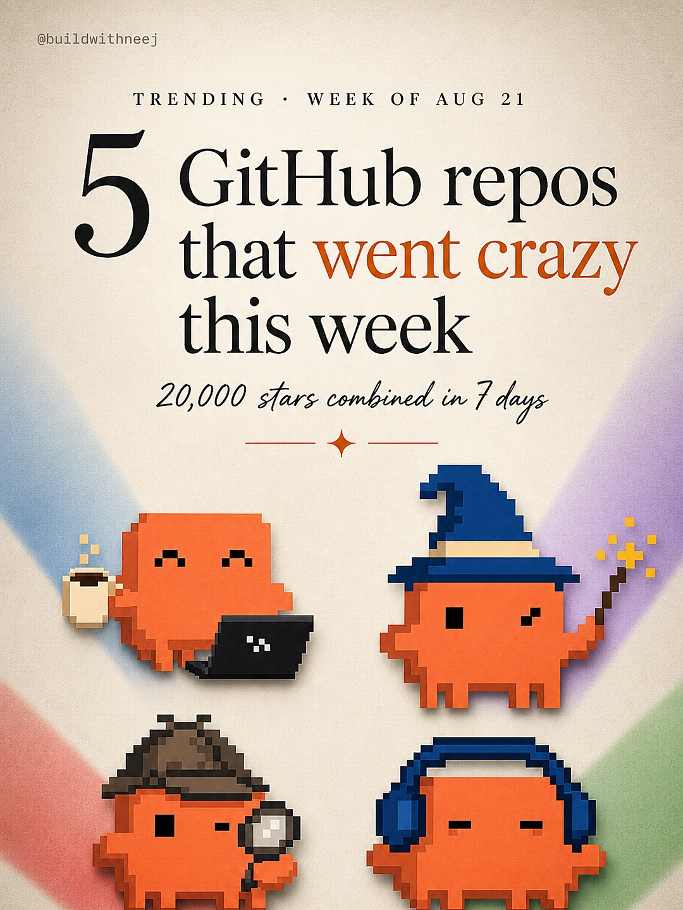
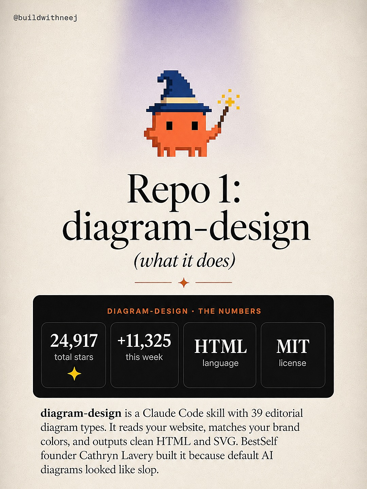
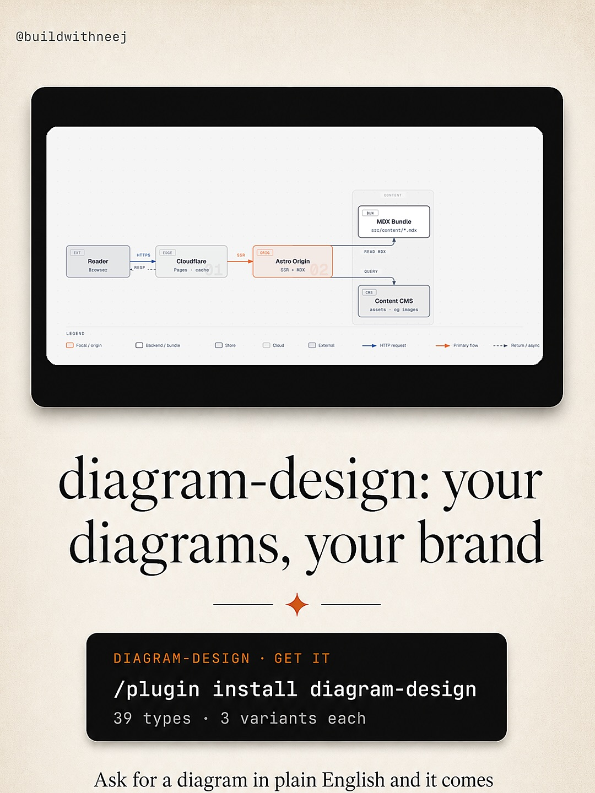
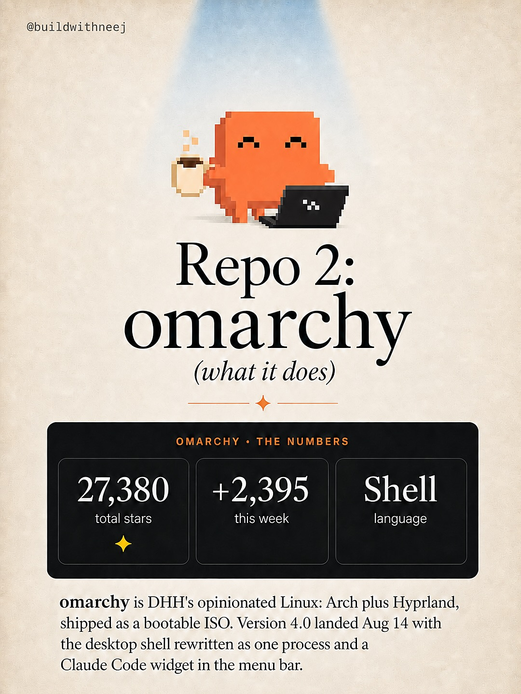
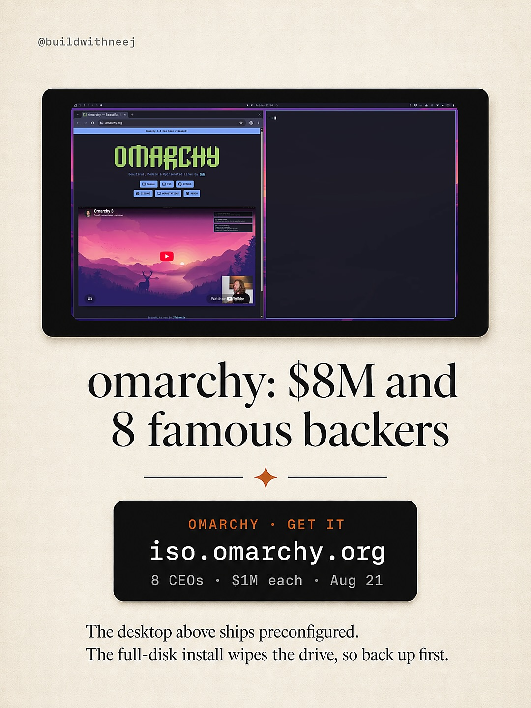
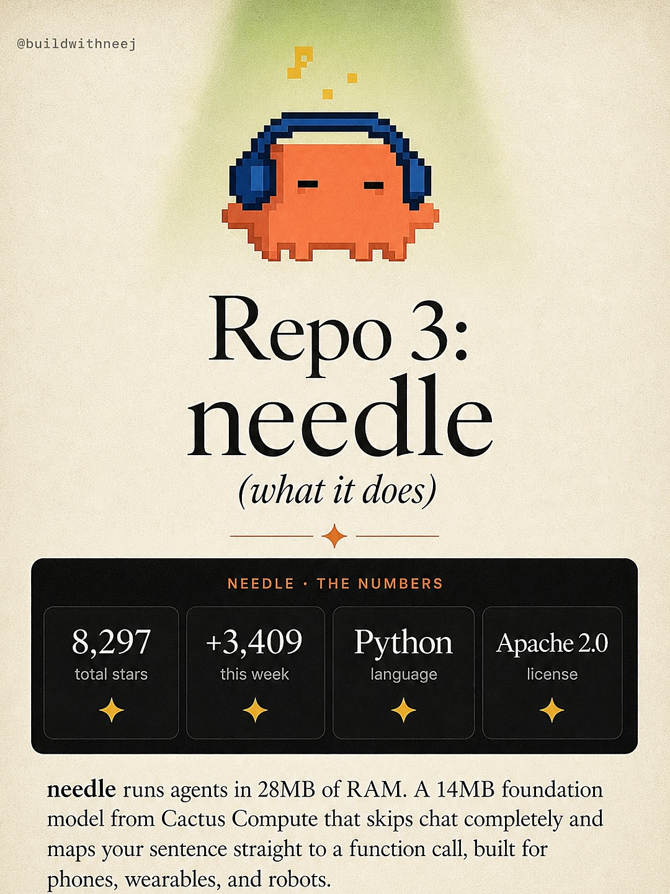
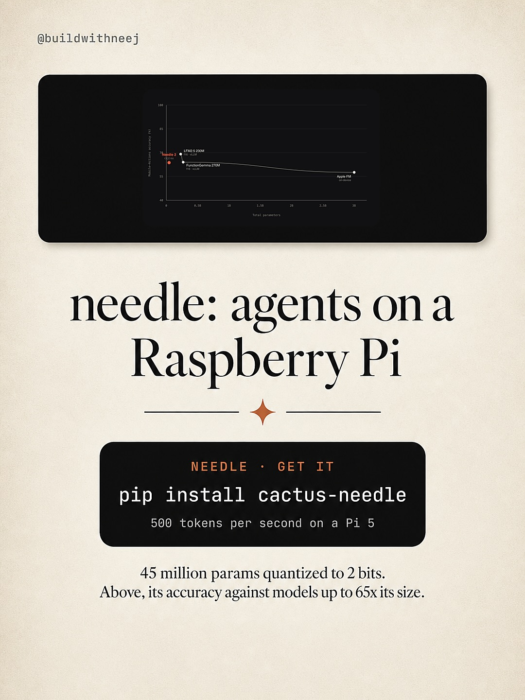
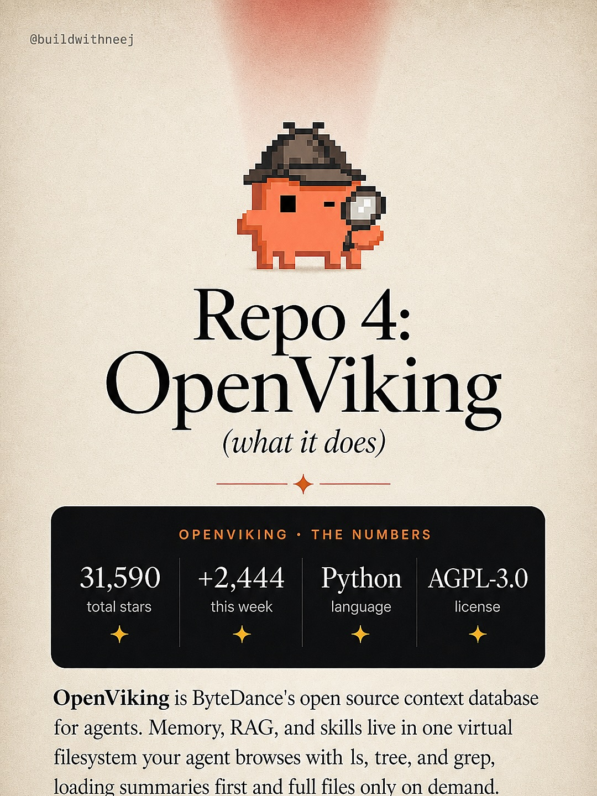
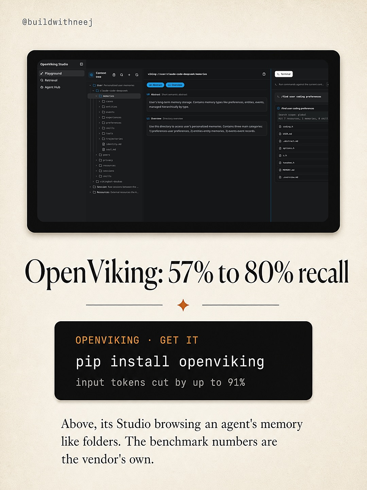

Instagram Post

Comment ‘GITHUB’ and I’ll DM you install commands...
carousel (10 slides) (enriched by ClaudeClaw)
Summary
TRENDING WEEK OF AUG 21 5 GitHub repos that went crazy th... | Repo 1: diagram-design (what it does) DIAGRAM-DESIGN • TH... | API Reader Backend HTTPS KEEP Cloudflare Pages DNS HTTP A... | Repo 2: omarchy (what it does) OMARCHY • THE NUMBERS 27,3... | Omarchy - Mozilla Firefox omarchy.org OMARCHY Docs Blog S... | Repo 3: needle (what it does) NEEDLE · THE NUMBERS 8,297 ... | Time to complete (s...
Caption
Comment ‘GITHUB’ and I’ll DM you install commands and my full notes on all 5 repos.
These 5 repos gained over 20,000 GitHub stars combined this week. Cathryn Lavery’s diagram-design was the fastest riser at 11,325 stars in 7 days, a Claude Code skill that renders 39 editorial diagram types matched to your brand. DHH’s omarchy got an $8M foundation behind it, 8 tech CEOs at $1M each, a week after its 4.0 release shipped with a Claude Code widget in the menu bar. Cactus Compute squeezed a tool-calling model into 14MB that runs agents on a Raspberry Pi. ByteDance open sourced OpenViking, a context database that lets agents browse memory like a filesystem and claims Claude Code recall jumps from 57% to 80%. And NVIDIA’s Switchyard routes easy agent calls to cheap models, cutting task costs 74% in their own eval.
#claudecode #github #opensource #aitools #codex
1
@buildwithneej TRENDING WEEK OF AUG 21 5 GitHub repos that went crazy this week 20,000 stars combined in 7 days
An infographic-style image features a title about "5 GitHub repos that went crazy this week" and four pixel-art orange characters depicting different personas (coding, wizard, detective, listening to music) on a textured background with diagonal color stripes.
2
@buildwithneen Repo 1: diagram-design (what it does) DIAGRAM-DESIGN • THE NUMBERS 24,917 total stars +11,325 this week HTML language MIT license diagram-design is a Claude Code skill with 39 editorial diagram types. It reads your website, matches your brand colors, and outputs clean HTML and SVG. BestSelf founder Cathryn Lavery built it because default AI diagrams looked like slop.
An infographic-style image displays a pixel art wizard character, a title "Repo 1: diagram-design", statistics, and a descriptive paragraph about the diagram-design tool.
3
@buildwithneej API Reader Backend HTTPS KEEP Cloudflare Pages DNS HTTP Astro Origin SSR MDX 02 CONTENT MDX Bundle MDX www.example.com/blog/*.mdx QUERY CMS Content EMS MDXTA MDX Pages LEGEND Product/Plugin Backend/Bundle Data Cloud External HTTP request Primary Flow Return/Data diagram-design: your diagrams, your brand DIAGRAM-DESIGN GET IT /plugin install diagram-design 39 types 3 variants each Ask for a diagram in plain English and it comes
A promotional graphic for "diagram-design" shows a technical flow diagram on a screen above a large title and a call to action.
4
@buildwithneej Repo 2: omarchy (what it does) OMARCHY • THE NUMBERS 27,380 total stars +2,395 this week Shell language omarchy is DHH's opinionated Linux: Arch plus Hyprland, shipped as a bootable ISO. Version 4.0 landed Aug 14 with the desktop shell rewritten as one process and a Claude Code widget in the menu bar.
A pixel art orange character holding a coffee cup and typing on a laptop is illuminated by a spotlight above text detailing the "omarchy" software project and its statistics.
5
@buildwithneej Omarchy - Mozilla Firefox omarchy.org OMARCHY Docs Blog Store Apps Omarchy 3 Beautiful, modern & secure Linux OS Watch on YouTube omarchy: $8M and 8 famous backers OMARCHY • GET IT iso.omarchy.org 8 CEOs • $1M each • Aug 21 The desktop above ships preconfigured. The full-disk install wipes the drive, so back up first.
A social media post displays a laptop screen showing the "Omarchy" website and a YouTube video, accompanied by text detailing its funding and features.
6
@buildwithneej Repo 3: needle (what it does) NEEDLE · THE NUMBERS 8,297 total stars +3,409 this week Python language Apache 2.0 license needle runs agents in 28MB of RAM. A 14MB foundation model from Cactus Compute that skips chat completely and maps your sentence straight to a function call, built for phones, wearables, and robots.
A digital interface displays information about a project named "needle," featuring a pixel art character wearing headphones, project statistics, and a textual description.
7
@buildwithneej Time to complete (seconds) 0 10 20 30 40 50 60 70 80
8
@buildwithneej Repo 4: OpenViking (what it does) OPENVIKING • THE NUMBERS 31,590 total stars +2,444 this week Python language AGPL-3.0 license OpenViking is ByteDance's open source context database for agents. Memory, RAG, and skills live in one virtual filesystem your agent browses with ls, tree, and grep, loading summaries first and full files only on demand.
An infographic-style social media post features a pixel art detective character above the title "Repo 4: OpenViking," with statistics and a description of the software below.
9
@buildwithneej OpenViking Studio Playground Retrieval Agent Hub Context view + Add v0.0.4-alpha User's long-term memory storage. Contains memory types
10
@buildwithneej Repo 5: Switchyard (what it does) SWITCHYARD • THE NUMBERS 2,038 total stars +932 this week Rust language Apache 2.0 license Switchyard is NVIDIA's Rust proxy for routing LLM calls across providers, with native OpenAI and Anthropic API compatibility. Easy agent turns go to cheap models and the hard ones escalate to frontier ones.
An infographic displays details about a project named "Switchyard," featuring a pixel-art character, key statistics like total stars and language, and a descriptive paragraph, all presented on a light background with a spotlight effect.
All slides







